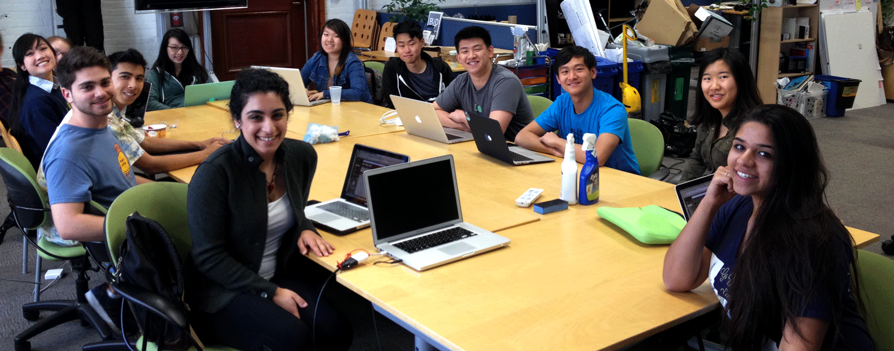
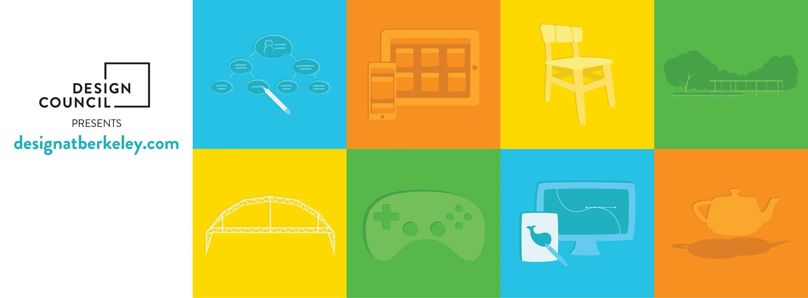
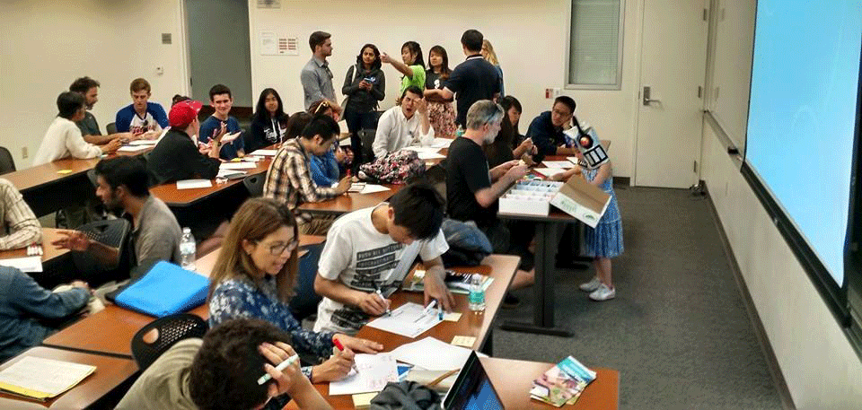
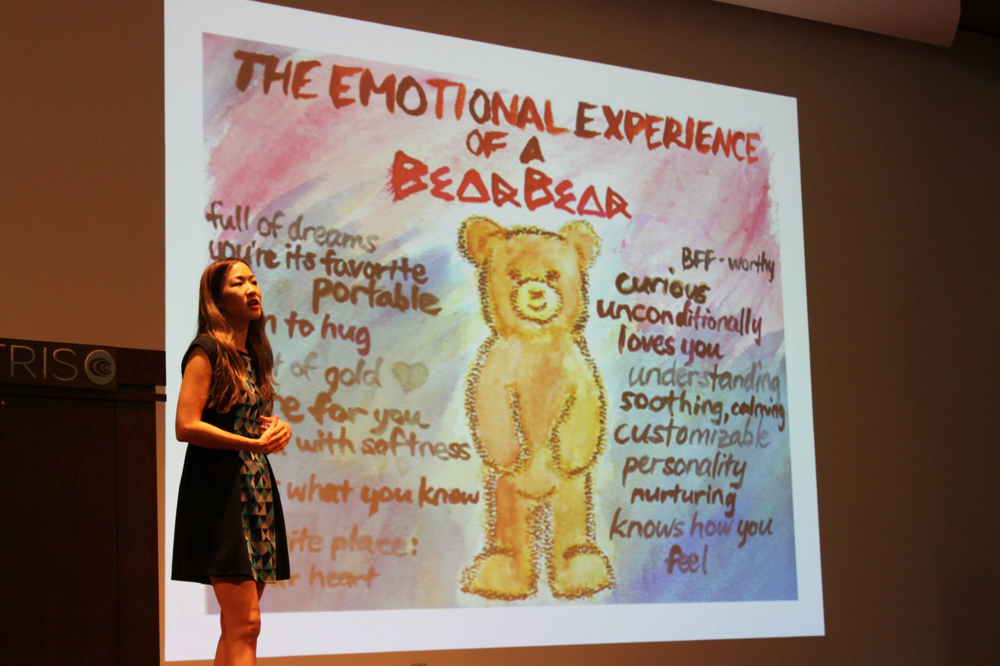
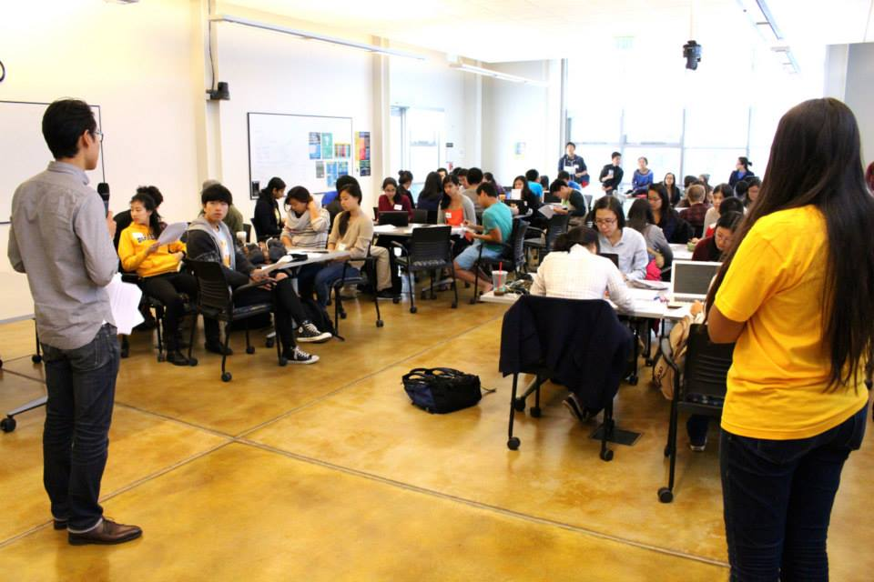

BERKELEY DESIGN COUNCIL
Co-leading Design At Berkeley // Design Leadership

Project Summary
Opportunity: "What is design?" is the question I get asked the most at school. From my view, there are so many pools of design talent within Berkeley, from design club members to hackers to architects, and so many design resources, from our invention lab to our maker spaces. But it's all too often that the talent stays siloed within a club or major, that the spaces are hidden and inaccessible, and that people simply don't know where to start when it comes to design.
For the past year, I've co-lead an organization to create a more collaborative, interdisciplinary design community at Berkeley. We seek to bring together people from all disciplines--from computer science to anthropology--to make design accessible to our entire student body and create a more collaborative environment where ideas can be exchanged fluidity and creativity magnified.
Questions we wanted to answer
- Where do people go when they have questions about design?
- How can we spread design thinking throughout campus?
- How can we enhance collaboration?
My Role: I organize weekly meetings with my co-leader where we work with our members to develop workshops and events, communicate with our event sponsors and industry speakers. I co-lead design workshops of up to 60 people and ensure all the attendees are fed refreshments (kept engaged).
Things We've Done
Represent Design At Berkeley: Design Council was originally a student-run initiative to help design the curriculum, projects, and space for Berkeley's upcoming design minor. This semester, we rebranded ourselves to become the interdisciplinary epicenter of design at Berkeley, where each design discpline intersects.

Create designatberkeley.com: Part of the rebranding was to create a website that could serve as the one-stop resource to discover what design means at Berkeley and find the resources, classes, and activities to get involved with.
Facilitate workshops:
This year, we ran workshops at CalDay during new student admit weekend and Engineers Week. Depending on the audience, we give an introduction to design, then walk participants through the human-centered design process with a design challenge so they will have prototyped a design by the end of the hour.

Host Keynote Speakers: Throughout the year, we have industry representatives, like Marissa Louie (pictured), speak about their experiences in the industry and show students the potential for design after we graduate. This year, Design Council was able to sit on a panel in a dialogue with John Maeda after his keynote in Berkeley.

Host Collaborative Designathons: We've partnered with Google, Autodesk, and various student organizations, like Design Engineering Collaborative, to put together all-day UX Designathons and overnight 3D printing designathons with over 100 participants. Each time, they've been a hub for inspiring ideas and creativity.

What I've Learned
Leading workshops: The less I talk, the more successful the workshop because participants have more free time to be creative.
Collaboration: Working with people from different majors and backgrounds creates the best collaboration because everyone brings a fresh perspective.
Pizza: Free pizza brings all the students to the workshops.